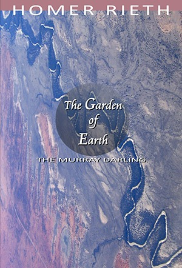

The Garden of Earth
Homer Rieth

Description
B ook Description Out on the river you’ll see there are swifts and babblers and other assorted thieves all of whom have their own bush telegraphy, a kind of Morse passing quietly from one landmark to the next, disappearing and reappearing with wild insouciance at the waterline—some, in fact, say that’s where another life begins, more secret than you know, to do with the keeping alive of memory, all those residual mysteries that tend to hang around towns, theirs are stories the river dwells on the longest, which it passes on surreptitiously to creeks, dams and waterholes— The Garden of Earth is told in Thirty Five Books. Each canto is a long-breathed sentence that takes you in its flow. They gather all the hues of nature, history, culture and philosophy like metaphorical rivers gathering majestic detritus. It invites us to consider the plenitude of the world, but also how precious and precarious a thing this is. Homer Rieth’s first epic Wimmera gave voice to the history, legend and folklore of the Wimmera region of north western Victoria, and to ideas of 'place' and 'country' not only as cultural markers, but as ciphers of an enduring mythos. In his new companion epic, he turns his gaze to the larger arena of the Murray Darling, to this oldest of continents more broadly. He offers a vision of the natural environment and the human world as bound together on a global scale. The Garden of Earth is a hymn to and argument in defence of the future of the planet. It is the poet's final assay of our age-old dream vision of the world, only here it is as something at once luminous and exceptionally Australian. Cover photograph: Tim J Keegan, Aerial view of The Darling River from 15000ft
Description
B ook Description Out on the river you’ll see there are swifts and babblers and other assorted thieves all of whom have their own bush telegraphy, a kind of Morse passing quietly from one landmark to the next, disappearing and reappearing with wild insouciance at the waterline—some, in fact, say that’s where another life begins, more secret than you know, to do with the keeping alive of memory, all those residual mysteries that tend to hang around towns, theirs are stories the river dwells on the longest, which it passes on surreptitiously to creeks, dams and waterholes— The Garden of Earth is told in Thirty Five Books. Each canto is a long-breathed sentence that takes you in its flow. They gather all the hues of nature, history, culture and philosophy like metaphorical rivers gathering majestic detritus. It invites us to consider the plenitude of the world, but also how precious and precarious a thing this is. Homer Rieth’s first epic Wimmera gave voice to the history, legend and folklore of the Wimmera region of north western Victoria, and to ideas of 'place' and 'country' not only as cultural markers, but as ciphers of an enduring mythos. In his new companion epic, he turns his gaze to the larger arena of the Murray Darling, to this oldest of continents more broadly. He offers a vision of the natural environment and the human world as bound together on a global scale. The Garden of Earth is a hymn to and argument in defence of the future of the planet. It is the poet's final assay of our age-old dream vision of the world, only here it is as something at once luminous and exceptionally Australian. Cover photograph: Tim J Keegan, Aerial view of The Darling River from 15000ft
{kind=link}
Information
| ISBN | 9781876044893 |
| Release | last year and June this year when the review was |
| Pages | 600 |
About the Author
Reviews
Cordite Poetry Review
Review Short: Homer Rieth’s The Garden of Earth Robert Wood Cordite Poetry Review 26 June 2017 You could be forgiven for thinking that ‘Australia’ was simply this place, rather than an imagined community. It is of course not only a phantasm or a figment that is whole, but also real and divisible. In poetics, it is not a stretch to suggest that there is a heuristic, ascendant, paradigmatic separation between those in a transnational sphere sipping turmeric lattes and those authentic patriots tilling the soil. This fault line, which is, of course, anachronistic and dialectical, exists in the selected texts and influences as well as the paratextual selling points that tell us something is ‘traditional’ or ‘experimental’, ‘Romantic or ‘modern’, ‘country’ or ‘city’; in what claim ‘this is Australian’. Homer Rieth’s The Garden of Earth is packaged as an Australian epic, and yet, it might be better to suggest that it is a located and regional long poem that is speaking to nation and nature. This is not the same ‘Australia’ as Pi O’s beloved Fitzroy in his 24 Hours , nor is it similar to the Wheatlands of John Kinsella’s Divine Comedy . It takes as its own location the whole of the Murray-Darling, building from Rieth’s home in Minyip in the Wimmera region in regional Victoria on the East Coast, where he has lived for several years. And yet, one cannot help but notice that The Garden of Earth , like respective works by O and Kinsella, is a poetic idea of ‘Australia’ that takes as its root and routes a direction from ‘the West’, a Greco-Romanic understanding of where epic comes from. Perhaps this shouldn’t be surprising given all these authors have European heritage, but it is striking given the demographic realities of a decolonising Australia, which brings with it Indigenous and CALD spectres, materials and discourses. There are, of course, epic traditions in each and we do not have to rely only on Odyssey and Iliad like good colonial boys might, but could suggest the Ramayana, Martin Fierro, Omeros or any other such non-Western undertaking. What though can we learn from Rieth’s vision about the epic in the here and now? And how might this presentist perspective be projectively useful? Rieth’s book is a big one. Coming in at 584 pages, it must approximate some 15 thousand lines – bigger than Milton’s Paradise Lost , bigger than Kalidasa’s Raghuvamsa, bigger than Berndt’s Three Faces of Love . But then again, the Murray-Darling is a big river, placing fifteenth in length worldwide, between the Niger and Tocantins. Rieth’s work in the basic proportions would seem appropriate. Although the epigraph of the work is taken from a translation of Hafiz, The Garden of Eden emerges from a transatlantic milieu. The preponderance for rhyme and the long sentence lends a Whitmanian cadence – expansive, regular, encompassing – which is buttressed by the familiar expression ‘I sing’ (on page 58 particularly). There are also references to Walt’s contemporaries Longfellow and Kendall. The work is not ‘difficult’ then in terms of message, pagination, rhythm, line-break, form or style. This project does not come after Charles Olson (Maximus poems) or Basil Bunting ( Briggflatts ) let alone Rachel Blau DuPlessis ( Drafts ) or The Grand Piano . While Ezra Pound is referenced (11) and Robert Lowell is quoted (488), it is not a stretch to say it pre-Modernist, hence the signposts of the late nineteenth century. At the level of content The Garden of Eden is firmly focused on nature with occasional painterly references (Delacroix, Leonardo, Lorenzo Lippi) and some more popular culture (beer, cricket, footy in Canto 7; and ‘Barbeque Shapes’ (25) [one of my favourite flavours]). These references often come from a different location and generation to mine (I only know ‘California poppy’ because that is what my grandfather put in his hair) but that does not mean they are inaccessible. What does distinguish the work is that the land is often idyllic, pure, silent, often Romantically so, suggesting a lack of eco-critical co-ordinates and some sediment of the idea of terra nullius , which is confirmed by the lack of Indigenous references, the absence of living characters and the anachronistic (mis)spelling of Arrente as Arunta (56). This is a work of landscape with landscape punctuated by high culture from Europe or poetic expression that pre-dates federation on this continent. There are unnamed interlocutors, whom Rieth quotes, but not characters; and, given the evenness of tone this implies a work that is not ‘polyphonic’ (in Bahktin’s sense) or ‘dramatic’ (in Hegel’s). The world is brought into the subject, the speaking ‘I’ of a poet and then sent back out whole and resolute. This central I expresses itself in a high voice (see the use of ‘O’ to begin sentences and to pre-figure ownership for example in ‘O my Murray, /my Campapse, /my Ovens, /my Goulbourn, my Murrumbidgee’, (11); ‘O tamed continent’ (109); ‘O keep me safe’ (249)). This is a work of grand liberalism that is curious and idiosyncratic. Rieth is a starting point as good as any, from which we can suggest that Australia is continental, that it can become a republic with several countries, countries that are demarcated by cultural and geographic realities and ideas that are nevertheless a utopian kind of treaty. The Murray-Darling is not a singular place. It is a part of a regionalism that is not simply somewhere away from the urban or buffeted by the suburban, but has as much to do with the mind in the sky as boots on the ground. Rieth begins to show us the poetic way with rhythm, scale and possibility. If The Garden of Earth is firmly located in a traditional and Romantic context, it might nevertheless show us what might yet be Australia’s poetic tomorrow if we labour to read it slant.